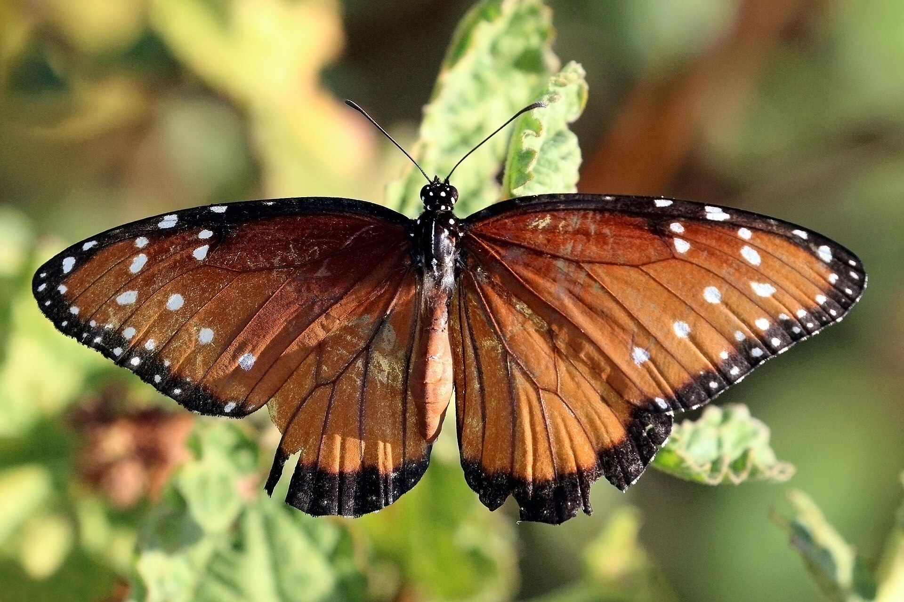
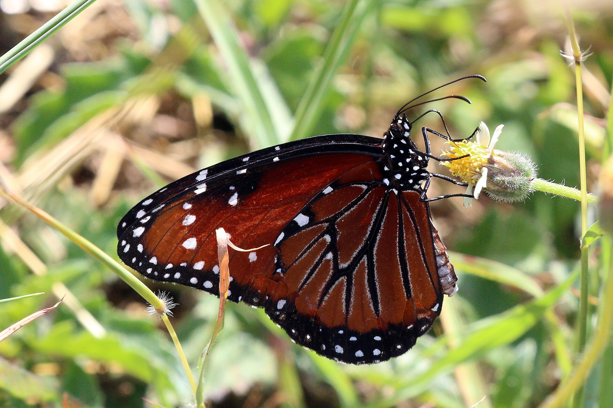
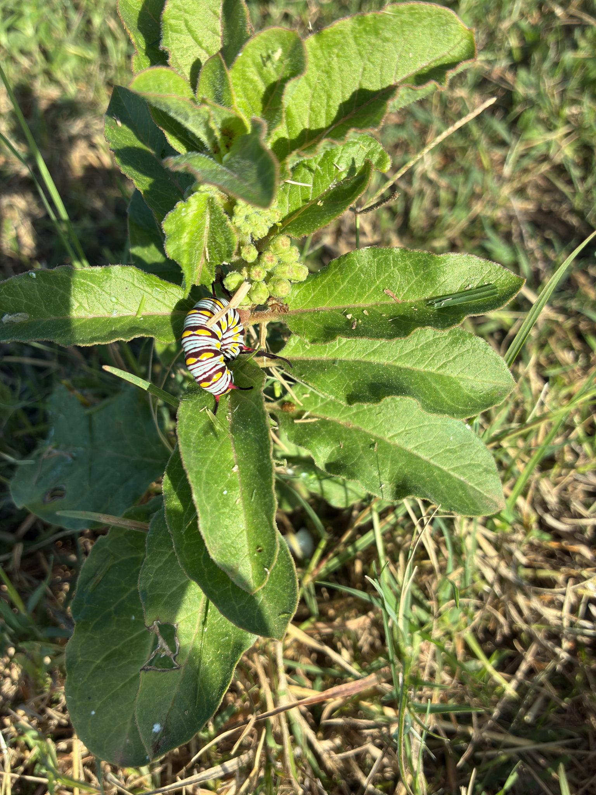

Danaus gilippus
Common nowSame milkweed yards as Monarch, plus white twinvine. A darker orange-brown “Monarch” in North Fort Myers this week is often a Queen. They live here year-round.


Yards, pineland, fields, marshes.
Milkweeds
Asclepiaswhite twinvine
Funastrum clausumFlorida milkvine
Matelea floridanaUse the hindwing line (Viceroy) and the color (mahogany vs bright orange).